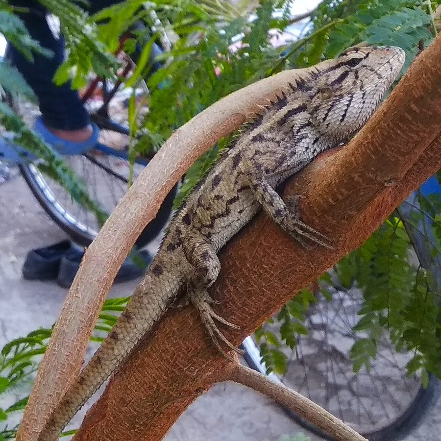

गिरगिटOriental Garden Lizard
Calotes versicolor · Agamidae · REP-0001

- Scientific name
- Calotes versicolor (Daudin, 1802)
- Family
- Agamidae
- Hindi
- गिरगिट
- Status here
- native
- IUCN
- LC
When to look कब देखें
Expected mainly in March, April, May, June, July, August, September, October.
Oriental Garden Lizard / Common Garden Lizard
Calotes versicolor (Daudin, 1802) — Agamidae
गिरगिट — पूर्वी UP की हर दीवार, हर पेड़, हर बाड़ पर। सामान्य दिनों में भूरा-अदृश्य, और प्रजनन काल में सिर व गला चमकीला लाल-नारंगी। पीढ़ियों से "रक्तचूषक" कहा जाता रहा — पर यह वास्तव में गाँव का सबसे प्रभावी कीट-शिकारी है जो न काटता है, न खून चूसता है।
Quick Identification त्वरित पहचान
| Feature | Description |
|---|---|
| Size | 30–40 cm total length (half of which is the long tail) |
| Body | Highly laterally compressed; angular profile |
| Crest | Row of enlarged scales along nape and spine — most visible in males |
| Colour | Resting = brown to grey-brown; breeding male = vivid orange-red head and throat |
| Eyes | Can move independently — each eye can look in a different direction |
| Behaviour | Perches upright on vertical surfaces; head-bobs repeatedly; does press-up displays |
Field rule: A medium-sized lizard perching upright on a vertical surface, head-bobbing, with a dorsal crest — and a red-orange head if a breeding male — is Calotes versicolor. Nothing else common in UP villages looks like this.
Morphology आकारिकी
| Feature | Measurement |
|---|---|
| Total length | 30–40 cm |
| Snout-to-vent length | 10–14 cm |
| Tail length | 20–28 cm |
| Weight | 20–40 g |
Head: Triangular, large relative to body. Eyes large, independently mobile — 360° field of vision collectively. Tympanum (ear opening) visible as a circular patch behind the eye. Tongue short, fleshy (not forked like a snake's).
Body: Laterally compressed. Skin covered in keeled scales — each scale has a central ridge. Along the nape and spine, a row of enlarged, erect scales forms a dorsal crest, more prominent in males.
Tail: Long, slender, tapering. Not easily autotomised (shed) compared to many other lizards — it will regrow if lost but more slowly and imperfectly.
Limbs: Four well-developed limbs, each with five clawed toes. Strong grip for vertical surfaces.
Colour: Resting = brown to grey-brown, with faint darker banding on body; highly cryptic. Breeding male (March–June) = head and anterior throat bright orange-red to deep red. Female = remains brown year-round; slightly smaller.
The Red Colour — and the "Bloodsucker" Myth लाल रंग और मिथक
The name "bloodsucker" (rakt-chuska) is a persistent village misnomer, believed across large parts of UP and India. The lizard does not bite humans unprovoked, does not suck blood, and is entirely harmless to people.
The red coloration of the breeding male is aposematic signalling to rival males — a territorial display, not aggression toward people. The colour is produced by carotenoid pigments in the skin and intensifies under hormonal control during the breeding season.
Correcting this misnomer in the local community — explaining what the red colour actually means and why the lizard is harmless — is one of the most straightforward conservation communication tasks possible. Every person who knows this truth can protect these lizards from unnecessary killing.
Ecological Role पारिस्थितिक भूमिका
Insectivore: Calotes versicolor feeds almost entirely on insects and other small arthropods — grasshoppers, crickets, katydids; beetles and their larvae; flies and moths; ants and termite alates; caterpillars; and occasionally small geckos or juvenile lizards.
It hunts by sit-and-wait ambush — perching motionless on a vantage point, then darting forward with a rapid lunge when prey comes within range. Strike speed is extremely fast.
Pest controller: In agricultural field margins and gardens, the garden lizard suppresses populations of grasshoppers, caterpillars, and beetles that damage crops. One adult lizard may consume 5–15 insects per day.
Prey for: Shikra (Accipiter badius) — the primary avian predator; Black Kite (opportunistic); Rat Snake (Ptyas mucosa) — hunts lizards actively; Common Mongoose (Herpestes edwardsii) — ground-level predator; domestic cats in village compounds.
Life Cycle / Phenology जीवन चक्र
| Month | Event |
|---|---|
| Mar–Jun | Breeding season — males develop red heads; territorial head-bobbing and press-up displays |
| Apr–May | Peak breeding; male fights over territory |
| May–Jun | Female digs burrow in soft, moist soil; lays 10–20 eggs (white, oval, leathery-shelled, ~15 mm) |
| Jun–Aug | Incubation period (6–8 weeks at ambient temperature; no parental care) |
| Aug–Sep | Hatchlings emerge (~6 cm body length; fully independent) |
| Nov–Feb | Less active; bask more; reduced foraging in cold months |
Activity pattern: Diurnal. Emerges from roosting site after the air warms in the morning. Retreats at dusk. Thermoregulation: Ectothermic — basks in morning sun to raise body temperature to operating range (~32–38°C). Lifespan: 3–5 years in the wild.
Behaviour व्यवहार
Territorial: Each adult male holds a territory on a tree trunk, wall section, or shrub patch. He perches at the highest point and performs head-bob displays (rapid vertical head movements) to assert ownership. The rate and pattern of head-bobs conveys information about identity and motivation.
Press-up displays: Males do rapid push-ups (body raised and lowered on forelegs) — an energetically costly signal. Frequency reflects physical condition; weaker males cannot sustain high-frequency displays.
Cryptic resting: When not displaying, the lizard presses flat against its perch surface and becomes nearly invisible. If threatened, it moves to the opposite side of the trunk — staying hidden.
Temperature sensitivity: On cool mornings or overcast days, lizards are sluggish and approachable. On hot afternoons, they are fast and alert. Cool mornings are the best time for close-up photography.
Agricultural / Human Relevance कृषि एवं मानव उपयोग
Beneficial: Suppresses crop-damaging insects in field margins, kitchen gardens, and orchards. A single adult in a garden is worth having.
No harm to humans: Does not bite unless forcibly handled. The "bloodsucker" reputation has caused many to be killed unnecessarily — a conservation issue driven entirely by misinformation.
Pesticide threat: Broad-spectrum insecticide use collapses the lizard's prey base. Garden lizard populations in heavily sprayed areas decline visibly. Their absence is an indicator of insect community collapse.
Expected Locally स्थानीय रूप से अपेक्षित
Not a field record. Written from published accounts for eastern Uttar Pradesh. No confirmed local sighting yet — if you have seen it, that is what the atlas needs.
अभी तक स्थानीय पुष्टि नहीं। यह विवरण प्रकाशित स्रोतों से है, किसी अवलोकन से नहीं।
In Basti district, the Oriental Garden Lizard is the most visible reptile in village settings — seen on every garden wall, compound boundary, and roadside tree throughout the warm months. The first red-headed males appear in early March, signalling the start of breeding season. At Ayodhya, the lizards are semi-habituated to temple visitors and perch on sun-warmed stone walls at close range. Population densities appear highest in kitchen gardens and orchard margin zones where insect prey is abundant.
Distribution वितरण
Global range: One of the most widely distributed agamid lizards in the world — from Iran and Afghanistan east through the Indian subcontinent, Southeast Asia to southern China, and throughout the Malay Archipelago. Also introduced to several areas outside its native range.
In India: Found throughout the country, from sea level to approximately 1,800 m elevation. Absent only from true dense forest interiors and high-altitude zones.
In Uttar Pradesh: Extremely common across the entire state in all warm-season months, in any habitat with vertical perching structures — garden, field margin, orchard, road, or scrub.
In Basti district / eastern UP: Year-round resident; among the most commonly encountered vertebrates in village settings. Breeding males visible March–June.
Research Questions शोध प्रश्न
- On which date does the first red-headed male appear each year? — Record this annually; it tracks seasonal phenology and may respond to climate shifts.
- How many lizards are in your compound or field margin? — Walk a fixed 100 m route and count all seen; repeat monthly.
- How large is a male's territory? — Mark one individual (with a paint dot on tail tip) and note the range of locations over one month.
- What do they eat most? — Watch a foraging lizard for 20 minutes and record every prey item caught.
- Do villagers know it is harmless? — Survey 10 people: ask what they believe about the "bloodsucker." Record beliefs as baseline data for conservation communication.
Similar Species मिलती-जुलती प्रजातियाँ
| Species | How to distinguish |
|---|---|
| Psammophilus dorsalis (Rock Agama) | Rocky outcrops only; stockier; male has blue-grey head |
| Sitana ponticeriana (Fan-throated Lizard) | Much smaller (10–15 cm); male has brilliant blue-orange dewlap |
| Hemidactylus spp. (House Geckos) | Nocturnal; adhesive toe pads; calls at night; paler |
| Indian Chameleon (Chamaeleo zeylanicus) | True colour-change across whole body; zygodactyl feet; extremely slow |
Taxonomy & Classification वर्गीकरण
Original description. Calotes versicolor was described by François Marie Daudin in 1802 in Histoire naturelle, générale et particulière des reptiles, Vol. 4, as Agama versicolor. It was later transferred to the genus Calotes Cuvier, 1817. The species name versicolor means "changing colour" in Latin — referring to the male's colour change during breeding season.
Subspecies. Several subspecies have been described across the wide range:
| Subspecies | Range |
|---|---|
| C. v. versicolor | Indian subcontinent (nominate) |
| C. v. kakhienensis | Northeastern India, Myanmar |
Family and order placement. Belongs to the order Squamata, family Agamidae (agamid lizards). The family Agamidae contains approximately 500 species of lizards distributed across Africa, Asia, and Australia. The genus Calotes Cuvier, 1817 contains approximately 40 species of tree agamas, all restricted to South and Southeast Asia.
Phylogenetic notes. Molecular phylogenetics places Calotes versicolor firmly within the Agamidae (dragon lizards), which are distantly related to North American iguanas. The head-bobbing territorial display is ancestral in agamids and shared across the family. The independent eye movement (independently mobile eyes) is also ancestral and links agamids to other pleurodont lizards.
IUCN status rationale. Assessed as Least Concern (LC) by the IUCN Red List. Highly widespread, abundant, and adaptable to human-modified landscapes. Primary threats: habitat loss and illegal persecution driven by the "bloodsucker" misnomer.
Photo Gallery फोटो गैलरी
Atlas Connections संबंधित प्रजातियाँ
- INS-0003 Jewel Bug — documented prey; taken from Calotropis stems
- INS-0001 Red Cotton Bug — prey in field margins
- AMP-0001 Common Toad — shares insectivore niche; both active in the same village habitats
- REP-0002 Indian Rat Snake — significant predator of garden lizards
- FLR-0006 Peepal — climbs peepal trunks; uses them as territorial display perches
- SFL-0001 Termite — predates termite alates during monsoon swarms
References संदर्भ
- Daudin, F.M. (1802). Histoire naturelle, générale et particulière des reptiles, Vol. 4. F. Dufart, Paris.
- Daniel, J.C. (2002). The Book of Indian Reptiles and Amphibians. Bombay Natural History Society / Oxford University Press.
- Smith, M.A. (1935). The Fauna of British India: Reptilia and Amphibia, Vol. 2. Taylor & Francis, London.
- Radder, R.S. & Shanbhag, B.A. (2004). Factors affecting duration of egg retention in the oviparous lizard, Calotes versicolor. Journal of Biosciences, 29(4): 475–481.
- Zoological Survey of India. Fauna of Uttar Pradesh — Reptilia. ZSI, Kolkata.
- GBIF Occurrence Data — Calotes versicolor, India (2026). GBIF taxon key: 9125207.
Source file: species/fauna/reptiles/garden_lizard.md